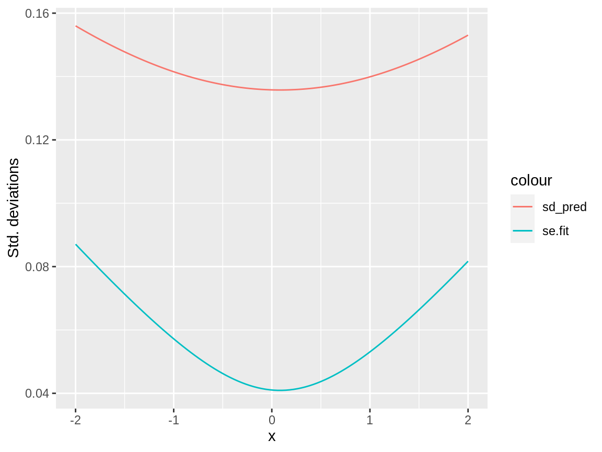
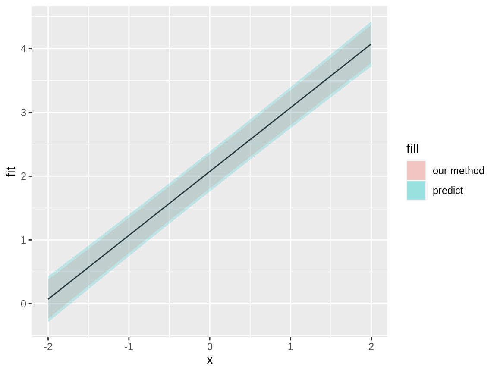

When we’ve estimated a linear model with lm(), we often want to extract information to be used in presentation of results (tables and figures) or in further calculations. You’ve already used the predict() function for calculating predictions and prediction uncertainties. In Project 2, you also need to access information about the estimated parameters and their uncertainty.
Let’s say we’ve estimated a simple model:
fit <- lm(y ~ 1 + x, data = data.frame(x = rnorm(10), y = rnorm(10)))The coefficient estimates can be extracted with
The estimated covariance matrix of the coefficient estimates can be extracted with
vcov(fit)
#> (Intercept) x
#> (Intercept) 0.07602717 0.01647477
#> x 0.01647477 0.12392250To get Standard Error for a coefficient, extract the diagonal element and take the square root.
The coefficient information can be combined with standard errors to construct approximate confidence intervals, which in the project can be plotted with geom_ribbon().
The coefficient estimates and uncertainty information can also be extracted with
summary(fit)$coefficients
#> Estimate Std. Error t value Pr(>|t|)
#> (Intercept) 0.2486088 0.2757302 0.9016378 0.3935841
#> x -0.2810876 0.3520263 -0.7984847 0.4476427To extract specific elements:
coefs <- summary(fit)$coefficients
coefs["x", "Estimate"]
#> [1] -0.2810876
coefs["x", "Std. Error"]
#> [1] 0.3520263The broom package can provide the same information in a similar way, but for this particular type of problem it doesn’t really add any value over the basic approach:
suppressPackageStartupMessages(library(tidyverse))
library(broom)
tidy(fit)
#> # A tibble: 2 x 5
#> term estimate std.error statistic p.value
#> <chr> <dbl> <dbl> <dbl> <dbl>
#> 1 (Intercept) 0.249 0.276 0.902 0.394
#> 2 x -0.281 0.352 -0.798 0.448
tidy(fit) %>%
filter(term == "x") %>%
pull(std.error)
#> [1] 0.3520263The predict() function can provide prediction standard errors, with se.fit, but those are only half the story when predicting new data. The standard errors only include the uncertainty information about the linear predictor curve. For full prediction uncertainty, we need to take the observation variation into account, which lm() estimated via the variance of the residuals. Since the residuals for new observations is assumed to be conditionally independent of the predictor curve, the prediction variance can be estimated as the sum of the square of the prediction standard error and the residual variance, if the degrees of freedom is large. For the help text for lm() we see that when se.fit=TRUE, the output list contains the elements
fit: vector or matrix (depending on the interval argument)se.fit: standard error of predicted meansresidual.scale: residual standard deviationsdf: degrees of freedom for residual
df <- tibble(x = rnorm(10), y = 2 + x + rnorm(10, sd = 0.1))
fit <- lm(y ~ x, data = df)
df_pred <- data.frame(x = seq(-2, 2, length.out = 100))
pred <- predict(fit, newdata = df_pred, se.fit = TRUE)
sd_pred <- sqrt(pred$se.fit^2 + pred$residual.scale^2)
ggplot(cbind(df_pred, se.fit = pred$se.fit, sd_pred = sd_pred)) +
geom_line(aes(x, se.fit, colour = "se.fit")) +
geom_line(aes(x, sd_pred, colour = "sd_pred")) +
ylab("Std. deviations")
We can check our logic by comparing our own prediction interval construction to that obstained with interval="prediction":
pred <- predict(fit, newdata = df_pred, se.fit = TRUE, interval = "prediction")
sd_pred <- sqrt(pred$se.fit^2 + pred$residual.scale^2)
ggplot(cbind(df_pred,
as.data.frame(pred$fit),
se.fit = pred$se.fit,
sd_pred = sd_pred)) +
geom_line(aes(x, fit)) +
geom_ribbon(aes(x,
ymin = fit - qnorm(0.975) * sd_pred,
ymax = fit - qnorm(0.025) * sd_pred,
fill = "our method"), alpha = 0.2) +
geom_ribbon(aes(x,
ymin = lwr,
ymax = upr,
fill = "predict"), alpha = 0.2)
There is a small difference between the two methods, which is explained by the relatively small degrees of freedom, 8, as seen from the matching ratios for the \(t\)- and Normal quantiles, and for the interval widths
c(qt(0.975, df = pred$df) / qnorm(0.975),
mean((pred$fit[, "upr"] - pred$fit[, "lwr"]) / (2 * qnorm(0.975) * sd_pred)))
#> [1] 1.176554 1.176554For large degrees of freedom, such as for the daily spatial weather prediction in the project, this difference is negligible, and the sd_pred value is a suitable estimate of the prediction standard deviation.